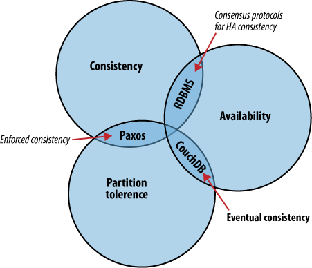

$ fleetctl cat packetbeat
[Unit]
Description=Packetbeat Network Package Summary Metrics Service
Requires=docker.service
After=docker.service
[Service]
Restart=always
ExecStartPre=-/usr/bin/docker kill %p
ExecStartPre=-/usr/bin/docker rm -f %p
ExecStartPre=/usr/bin/docker pull ianblenke/packetbeat-agent:latest
ExecStart=/usr/bin/docker run --name %p --net=host -e ES_HOST=172.17.42.1 ianblenke/packetbeat-agent:latest
ExecStop=/usr/bin/docker stop -t 10 %p
ExecStop=/usr/bin/docker rm %p
[X-Fleet]
Global=true
Even with chef provisioned "always on" servers, persistence is not guaranteed, nor is it even necessary.
Retaining CAP quorum is critically important.